KiCad+FlatCAM+Kitmillで切削基板を作る
通常，Kitmillを使うとしたらORIMIN PCBを使うのが一般的だと思います．しかしながらあのソフトウェアはX2拡張に非対応であるため(具体的には円弧なドが使えない)KiCadとは相性が悪いです．そのためフリーのOSSなCAMであるFlatCAMを使ってガーバーデータからG-codeを生成しようと思います．
ガーバーデータの用意
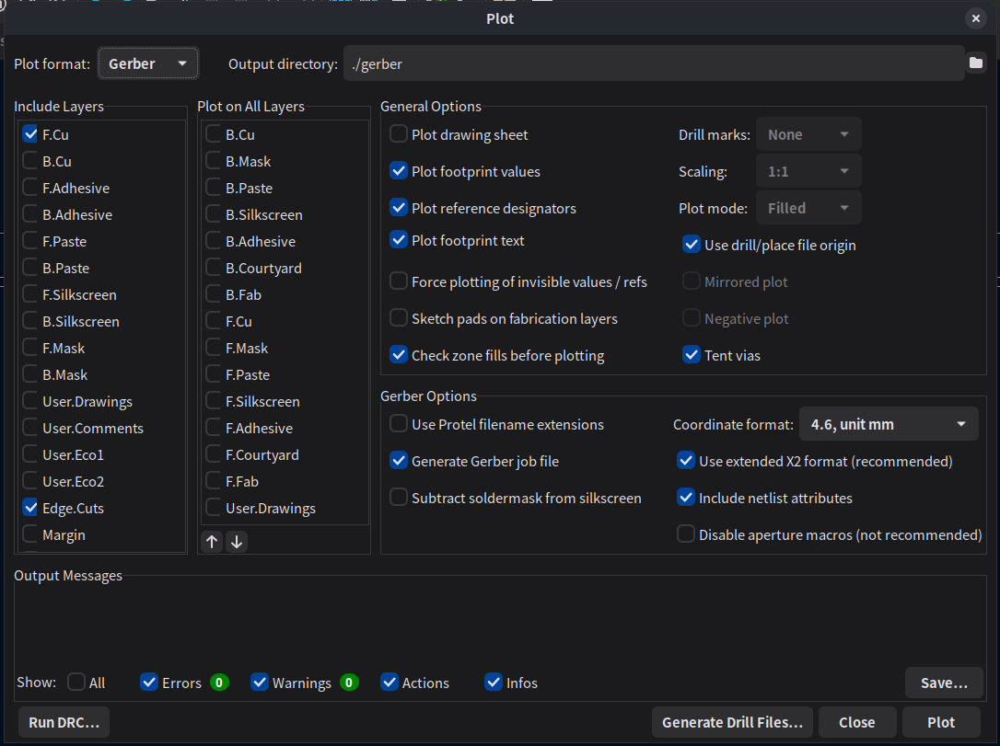
ドリルデータはPTHとNPTHを纏めておく
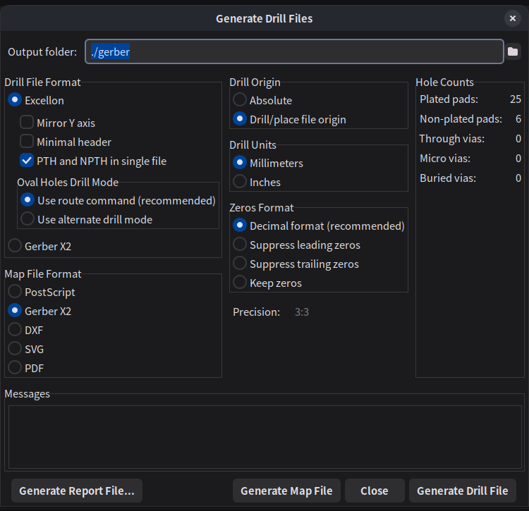
CAM(FlatCAM)で変換
切削，穴開け，外形加工にはORIGINAL MIND社の土佐昌典VC(ツール径4 mm,ドリル径0.5 mm, 先端角53.14 deg(切り込み深さ=切削幅))を使用
デザインルールよりパターンのクリアランス(切削幅)は0.2 mm，送り速度はガラエポなのでチキって100mm/s．
ヘリカル加工，外形加工時の切り込み深さは0.2 mm，基板厚は1.6なのでz=-1.7 mmまで切る．送り速度は60 mm/s\
- Cu.gbr
- Edge.gbr
“File” → “Open Gerber” - .drl
“File” → “Open Excellon”
読み込んだ後 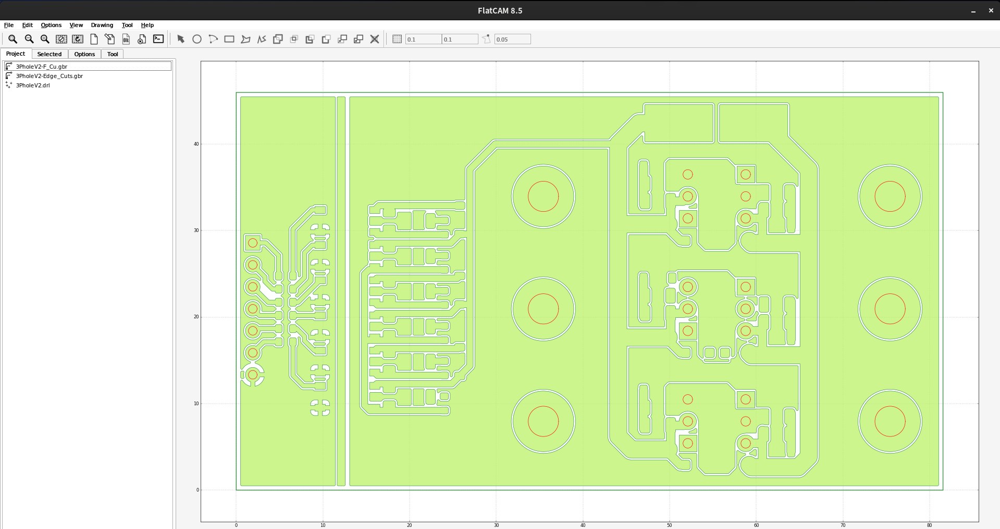
パターン
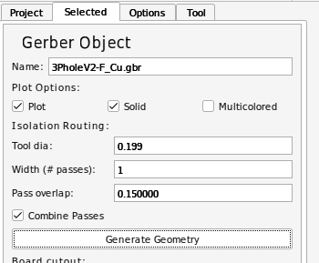 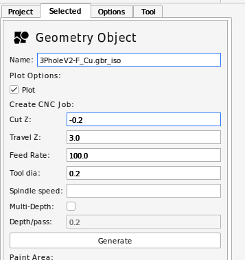
外形
外形はパターンのBoard cutoutでもできますが，任意の形に切ろうとした場合はこの方法が必須です．
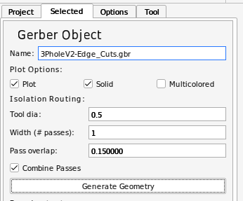
このままではEdgeの線の内外に切削パスが通ってしまうため
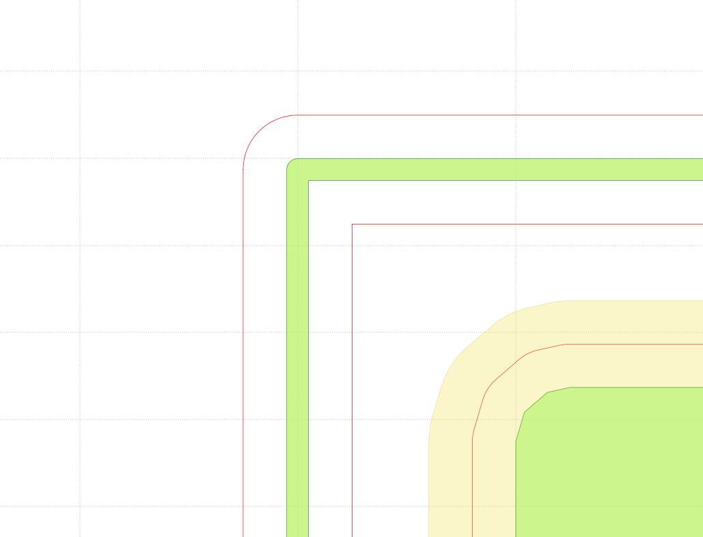
EdgeのGeometryを選択した状態で
“Edit” → “Edit Geometry”
内側の赤線を選択
上タブ"Cut Path"
内側の赤線を選択
上タブ"Delete Shape"
“Edit” → “Update Geometry”
とすることで外側だけ彫るパスが生成できる．
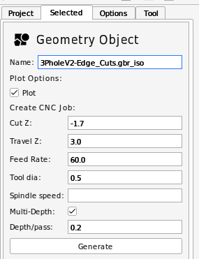
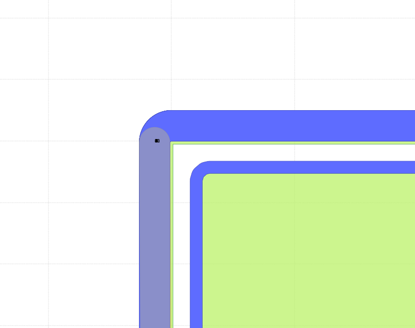
穴開け(ドリル)
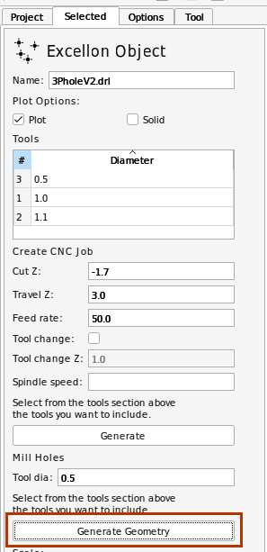
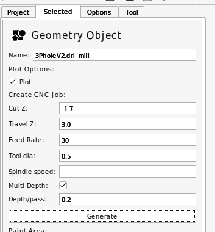
変換結果
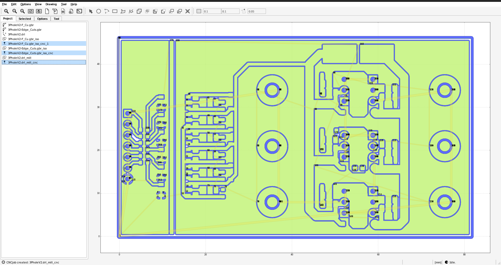
ここで青色の線(切り込む位置)がパターンに沿っていて抜けのないことを確認．
線幅とドリル径が等しいと通ってくれないことがある．そういうときはGeometryを生成する段階でツール系を0.01 mm程度小さくすることで解決可能．
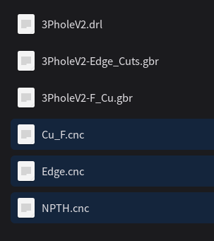
このデータをUSBCNCにて
パターン→穴開け→外形
の順に切削を行うことで切削が可能である．